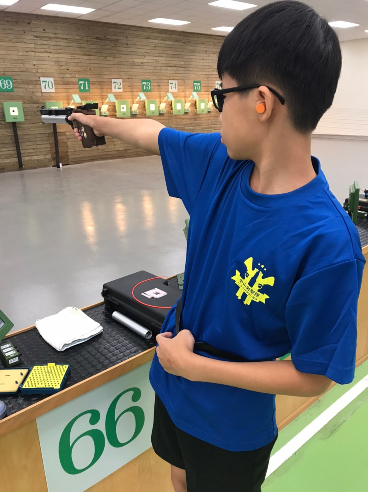

目前在大二社會學研究中掙扎學習的普通大學生。喜歡了解各種社會議題，也熱衷於在遊戲與動畫世界中探索。
你好，我是昱丞！目前就讀大學二年級。雖然量化研究的統計公式有時候挺讓人頭大的，但我依然對「了解這個社會如何運作」充滿好奇心。
我帶著社會學眼光去觀察生活、探討各種有趣議題。不管是在課本理論中，還是在動畫劇情或遊戲世界裡，我都在尋找那份關於「人」的故事。
※ 空氣手槍鍛鍊了我的專注力與抗壓性。

正在探索社會學的汪洋大海中...
想推坑我好玩的遊戲、好看的動畫，或是討論議題？歡迎寫信給我！